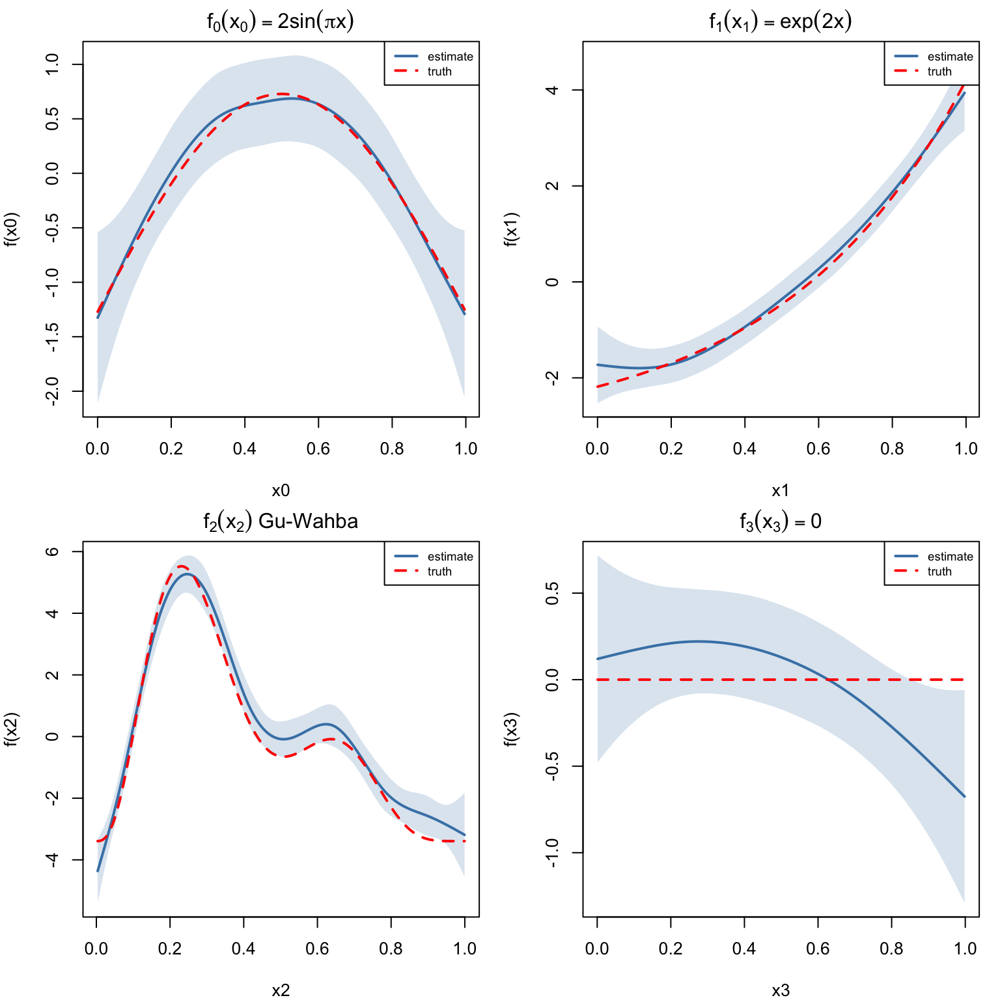
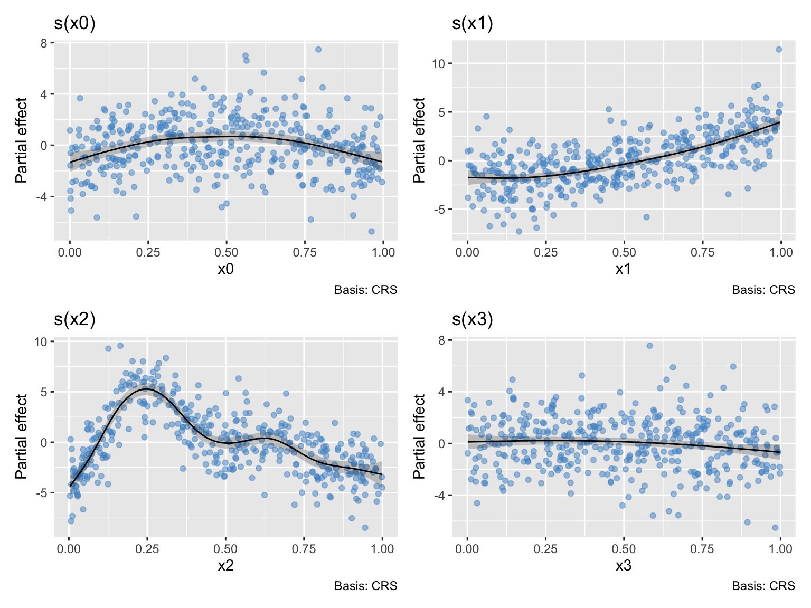
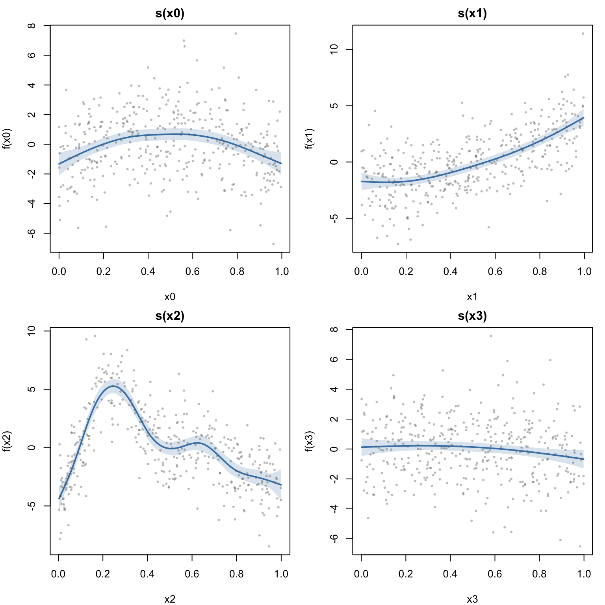
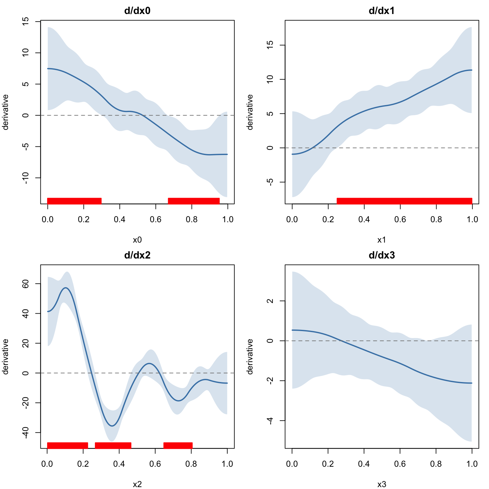
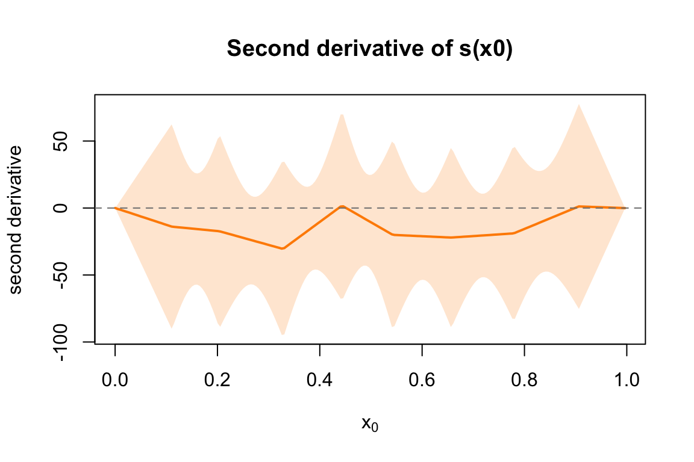
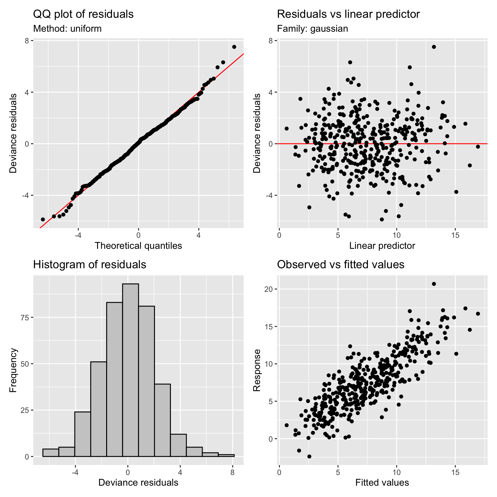
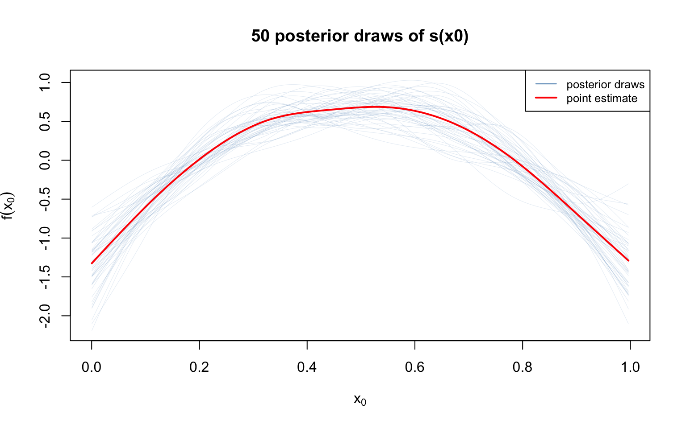

library(mgcv)Loading required package: nlmeThis is mgcv 1.9-3. For overview type 'help("mgcv-package")'.library(gratia)This vignette demonstrates model diagnostics and visualization using mgcv and gratia in R. We fit the same Gu & Wahba (1991) example as the Julia vignette and compare diagnostic outputs.
library(mgcv)Loading required package: nlmeThis is mgcv 1.9-3. For overview type 'help("mgcv-package")'.library(gratia)dat <- read.csv("../data.csv")
n <- nrow(dat)
x0 <- dat$x0; x1 <- dat$x1; x2 <- dat$x2; x3 <- dat$x3
y <- dat$y
f0 <- function(x) 2 * sin(pi * x)
f1 <- function(x) exp(2 * x)
f2 <- function(x) 0.2 * x^11 * (10 * (1 - x))^6 + 10 * (10 * x)^3 * (1 - x)^10
f3 <- function(x) rep(0, length(x))
head(dat) y x0 x1 x2 x3
1 2.992645 0.9148060 0.02270001 0.9090475 0.4018804
2 4.697172 0.9370754 0.51323953 0.8999248 0.4322142
3 13.935789 0.2861395 0.63072615 0.1923493 0.6636044
4 5.713290 0.8304476 0.41877162 0.5322903 0.1823693
5 7.634074 0.6417455 0.87926595 0.5221247 0.8383388
6 9.800107 0.5190959 0.10798707 0.1603357 0.9173730m <- gam(y ~ s(x0, k = 10, bs = "cr") + s(x1, k = 10, bs = "cr") +
s(x2, k = 10, bs = "cr") + s(x3, k = 10, bs = "cr"),
data = dat, method = "REML")
summary(m)
Family: gaussian
Link function: identity
Formula:
y ~ s(x0, k = 10, bs = "cr") + s(x1, k = 10, bs = "cr") + s(x2,
k = 10, bs = "cr") + s(x3, k = 10, bs = "cr")
Parametric coefficients:
Estimate Std. Error t value Pr(>|t|)
(Intercept) 7.4951 0.1051 71.34 <2e-16 ***
---
Signif. codes: 0 '***' 0.001 '**' 0.01 '*' 0.05 '.' 0.1 ' ' 1
Approximate significance of smooth terms:
edf Ref.df F p-value
s(x0) 3.426 4.236 8.946 7.47e-07 ***
s(x1) 3.199 3.968 67.745 < 2e-16 ***
s(x2) 7.834 8.631 68.148 < 2e-16 ***
s(x3) 1.887 2.360 2.711 0.0578 .
---
Signif. codes: 0 '***' 0.001 '**' 0.01 '*' 0.05 '.' 0.1 ' ' 1
R-sq.(adj) = 0.685 Deviance explained = 69.8%
-REML = 881.96 Scale est. = 4.4158 n = 400gratia’s overview provides a tidy summary of all smooth terms.
overview(m)
Generalized Additive Model with 4 terms
term type k edf statistic p.value
<chr> <chr> <dbl> <dbl> <dbl> <chr>
1 s(x0) CRS 9 3.43 8.95 < 0.001
2 s(x1) CRS 9 3.20 67.7 < 0.001
3 s(x2) CRS 9 7.83 68.1 < 0.001
4 s(x3) CRS 9 1.89 2.71 0.057796smooth_estimates evaluates each smooth on a regular grid with pointwise standard errors.
se <- smooth_estimates(m, n = 200)
head(se)# A tibble: 6 × 9
.smooth .type .by .estimate .se x0 x1 x2 x3
<chr> <chr> <chr> <dbl> <dbl> <dbl> <dbl> <dbl> <dbl>
1 s(x0) CRS <NA> -1.32 0.392 0.000239 NA NA NA
2 s(x0) CRS <NA> -1.29 0.379 0.00525 NA NA NA
3 s(x0) CRS <NA> -1.25 0.366 0.0103 NA NA NA
4 s(x0) CRS <NA> -1.21 0.353 0.0153 NA NA NA
5 s(x0) CRS <NA> -1.18 0.341 0.0203 NA NA NA
6 s(x0) CRS <NA> -1.14 0.329 0.0253 NA NA NAtrue_fns <- list(f0, f1, f2, f3)
x_vars <- c("x0", "x1", "x2", "x3")
fn_labels <- c(
expression(f[0](x[0]) == 2*sin(pi*x)),
expression(f[1](x[1]) == exp(2*x)),
expression(f[2](x[2]) ~ "Gu-Wahba"),
expression(f[3](x[3]) == 0)
)
par(mfrow = c(2, 2), mar = c(4, 4, 2, 1))
for (i in 1:4) {
se_i <- smooth_estimates(m, select = paste0("s(", x_vars[i], ")"), n = 200)
x_grid <- se_i[[x_vars[i]]]
est <- se_i[[".estimate"]]
se_vals <- se_i[[".se"]]
f_grid <- true_fns[[i]](x_grid)
f_grid <- f_grid - mean(f_grid)
ylims <- range(c(est - 2 * se_vals, est + 2 * se_vals, f_grid))
plot(x_grid, est, type = "l", lwd = 2, col = "steelblue",
ylim = ylims, xlab = x_vars[i], ylab = paste0("f(", x_vars[i], ")"),
main = fn_labels[i])
polygon(c(x_grid, rev(x_grid)),
c(est - 2 * se_vals, rev(est + 2 * se_vals)),
col = adjustcolor("steelblue", alpha.f = 0.2), border = NA)
lines(x_grid, f_grid, lty = 2, lwd = 2, col = "red")
legend("topright", c("estimate", "truth"), lty = c(1, 2),
col = c("steelblue", "red"), lwd = 2, cex = 0.7, bg = "white")
}
drawdraw(m, residuals = TRUE, rug = FALSE)
Partial residuals overlaid on smooth estimates show how well the smooth captures the data pattern.
par(mfrow = c(2, 2), mar = c(4, 4, 2, 1))
x_data <- list(x0, x1, x2, x3)
pr <- partial_residuals(m)
for (i in 1:4) {
se_i <- smooth_estimates(m, select = paste0("s(", x_vars[i], ")"), n = 200)
x_grid <- se_i[[x_vars[i]]]
est <- se_i[[".estimate"]]
se_vals <- se_i[[".se"]]
plot(x_grid, est, type = "l", lwd = 2, col = "steelblue",
xlab = x_vars[i], ylab = paste0("f(", x_vars[i], ")"),
main = paste0("s(", x_vars[i], ")"),
ylim = range(c(est - 2 * se_vals, est + 2 * se_vals, pr[[i]])))
polygon(c(x_grid, rev(x_grid)),
c(est - 2 * se_vals, rev(est + 2 * se_vals)),
col = adjustcolor("steelblue", alpha.f = 0.2), border = NA)
points(x_data[[i]], pr[[i]], pch = 16, cex = 0.5, col = adjustcolor("grey40", 0.4))
}
derivatives computes finite-difference derivatives with confidence intervals.
d <- derivatives(m, type = "central", n = 200)
head(d)# A tibble: 6 × 12
.smooth .by .fs .derivative .se .crit .lower_ci .upper_ci x0 x1
<chr> <chr> <chr> <dbl> <dbl> <dbl> <dbl> <dbl> <dbl> <dbl>
1 s(x0) <NA> <NA> 7.48 3.39 1.96 0.833 14.1 0.000239 NA
2 s(x0) <NA> <NA> 7.47 3.39 1.96 0.838 14.1 0.00525 NA
3 s(x0) <NA> <NA> 7.47 3.38 1.96 0.853 14.1 0.0103 NA
4 s(x0) <NA> <NA> 7.46 3.36 1.96 0.879 14.0 0.0153 NA
5 s(x0) <NA> <NA> 7.45 3.34 1.96 0.914 14.0 0.0203 NA
6 s(x0) <NA> <NA> 7.44 3.31 1.96 0.959 13.9 0.0253 NA
# ℹ 2 more variables: x2 <dbl>, x3 <dbl>par(mfrow = c(2, 2), mar = c(4, 4, 2, 1))
for (i in 1:4) {
d_i <- derivatives(m, select = paste0("s(", x_vars[i], ")"),
type = "central", n = 200)
x_grid <- d_i[[x_vars[i]]]
deriv <- d_i[[".derivative"]]
lower <- d_i[[".lower_ci"]]
upper <- d_i[[".upper_ci"]]
sig <- (lower > 0) | (upper < 0)
ylims <- range(c(lower, upper))
plot(x_grid, deriv, type = "l", lwd = 2, col = "steelblue",
ylim = ylims, xlab = x_vars[i], ylab = "derivative",
main = paste0("d/d", x_vars[i]))
polygon(c(x_grid, rev(x_grid)),
c(lower, rev(upper)),
col = adjustcolor("steelblue", alpha.f = 0.2), border = NA)
abline(h = 0, lty = 2, col = "grey50")
if (any(sig)) {
rug(x_grid[sig], col = "red", lwd = 2, side = 1)
}
}
Second-order derivatives:
d2 <- derivatives(m, select = "s(x0)", order = 2, n = 200)
x_grid <- d2[["x0"]]
deriv <- d2[[".derivative"]]
lower <- d2[[".lower_ci"]]
upper <- d2[[".upper_ci"]]
plot(x_grid, deriv, type = "l", lwd = 2, col = "darkorange",
ylim = range(c(lower, upper)),
xlab = expression(x[0]), ylab = "second derivative",
main = "Second derivative of s(x0)")
polygon(c(x_grid, rev(x_grid)),
c(lower, rev(upper)),
col = adjustcolor("darkorange", alpha.f = 0.2), border = NA)
abline(h = 0, lty = 2, col = "grey50")
appraiseappraise produces the four standard diagnostic plots: QQ, residuals vs linear predictor, histogram, and observed vs fitted.
appraise(m)
smooth_samples draws posterior realizations of individual smooth functions.
ss <- smooth_samples(m, select = "s(x0)", n = 50, seed = 42)
se_x0 <- smooth_estimates(m, select = "s(x0)", n = 100)
x_grid <- se_x0[["x0"]]
est <- se_x0[[".estimate"]]
draws <- unique(ss[[".draw"]])
ylims <- range(ss[[".value"]])
plot(NULL, xlim = range(x_grid), ylim = ylims,
xlab = expression(x[0]), ylab = expression(f(x[0])),
main = "50 posterior draws of s(x0)")
for (dr in draws) {
idx <- ss[[".draw"]] == dr
lines(ss[["x0"]][idx], ss[[".value"]][idx],
col = adjustcolor("steelblue", 0.15), lwd = 0.5)
}
lines(x_grid, est, col = "red", lwd = 2)
legend("topright", c("posterior draws", "point estimate"),
col = c("steelblue", "red"), lwd = c(1, 2), cex = 0.8)
fitted_samples draws posterior samples of fitted values.
fs <- fitted_samples(m, n = 200, seed = 42)
cat("Fitted samples: ", nrow(fs), "rows x", length(unique(fs[[".draw"]])), "draws\n")Fitted samples: 80000 rows x 200 drawsmodel_concurvity(m)# A tibble: 15 × 3
.type .term .concurvity
<chr> <chr> <dbl>
1 worst para 2.37e-30
2 worst s(x0) 1.28e- 1
3 worst s(x1) 1.39e- 1
4 worst s(x2) 1.32e- 1
5 worst s(x3) 1.68e- 1
6 observed para 2.37e-30
7 observed s(x0) 4.14e- 2
8 observed s(x1) 5.32e- 2
9 observed s(x2) 5.35e- 2
10 observed s(x3) 5.79e- 2
11 estimate para 2.37e-30
12 estimate s(x0) 6.57e- 2
13 estimate s(x1) 7.44e- 2
14 estimate s(x2) 6.23e- 2
15 estimate s(x3) 7.25e- 2Pairwise concurvity:
model_concurvity(m, pairwise = TRUE)# A tibble: 75 × 4
.type .term .with .concurvity
<chr> <chr> <chr> <dbl>
1 worst para para 1 e+ 0
2 worst para s(x0) 4.28e-31
3 worst para s(x1) 3.05e-31
4 worst para s(x2) 2.95e-31
5 worst para s(x3) 4.67e-31
6 worst s(x0) para 3.45e-31
7 worst s(x0) s(x0) 1 e+ 0
8 worst s(x0) s(x1) 6.60e- 2
9 worst s(x0) s(x2) 8.55e- 2
10 worst s(x0) s(x3) 5.08e- 2
# ℹ 65 more rowsk.check(m) k' edf k-index p-value
s(x0) 9 3.426140 1.0475474 0.8150
s(x1) 9 3.199210 1.0197537 0.6725
s(x2) 9 7.833919 1.0422706 0.7575
s(x3) 9 1.886556 0.9756429 0.3450Both GAM.jl and gratia provide equivalent diagnostic interfaces:
| gratia (R) | GAM.jl (Julia) |
|---|---|
overview() |
overview() |
smooth_estimates() |
smooth_estimates() |
derivatives() |
derivatives() |
appraise() |
appraise() |
posterior_samples() |
posterior_samples() |
fitted_samples() |
fitted_samples() |
smooth_samples() |
smooth_samples() |
partial_residuals() |
partial_residuals() |
model_concurvity() |
concurvity() |
k.check() |
k_check() |